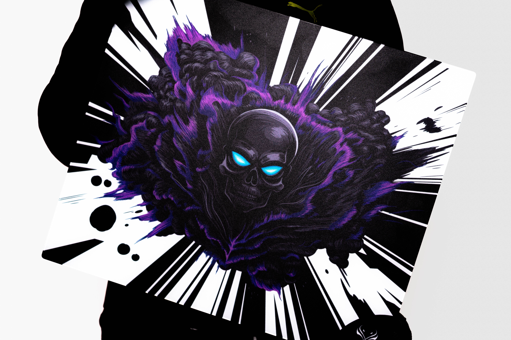
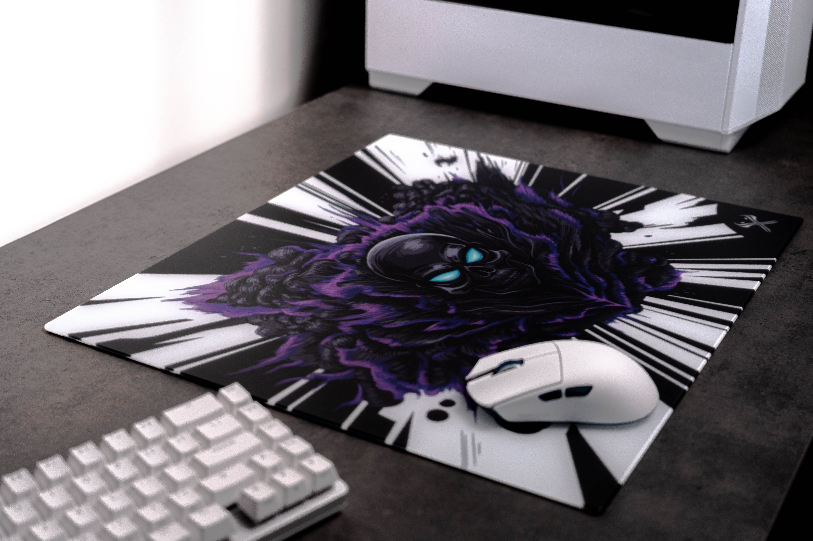

Introduction
The Cataclysm glass mousepad by Tenta-X tries to change the way we view glasspads and to allow cloth players to transition into the space of glasspad. In this review, let's examine its design, build, performance, and overall user experience to see if it lives upto the promises.
Note: The images for the review have been provided by LUK7N and you can Follow him on Twitter here: LUK7N

Design & Aesthetics
The Cataclysm stands out with it's bold purple, white and black color and ghost rider skull like design amidst a sea of anime glasspads. It is definitely one of the most striking looking glasspads that will either make you love it or hate it depending on your preference. The box comes with some stickers and though the box is pretty much your standard glasspad box the white and black color scheme looks really nice.
Material & Surface
The Cataclysm is a 490mm X 420mm X 4mm (3mm glass,1mm base) aluminosilicate glass mousepad which is microetched. Its surface is very smooth to the touch and there is very minimal stickiness to your skin. The mousepad features a full silicone base which is really nice to see and makes it so the mousepad doesn't move around at all in the desk. During my testing with different skates the mousepad doesn't show any break in period or any skratchiness. The one thing I would note is there is somewhat of loud audible feedback on the mousepad. One more thing I have had on my copy though I am not sure if it's a common thing is there is a chemical smell from the silicone base but once you put the base down onto the desk you won't be smelling it.
Performance
Let's talk performance. The Cataclysm has been a very interesting feel for a glasspad for me. The glasspad I was using before this is the Skypad 3.0-Xl which I would say sits somewhere in the middle of the pack in terms of speed with the new speed focused glasspads releasing day by day. As mentioned earlier Cataclysm tries to mitigate the gap between clothpad and glasspad and to do so the surface they have provided here is on the slower end. The best way to describe it would be a balanced controlled pad. It is still going to be faster than a clothpad but the surface is very unique. The initial friction of the pad feels very little but the moment you move the mouse on the pad you get this very controlled dynamic friction feeling which results in giving that feeling of how a cloth mousepad tucks against your mouse instead of the air hockey table feeling of a speed glasspad. This in result makes it so that your micro corrections feel really good and on point on this pad. As oppose to something like the Skypad 3.0 which has a similar speed but lacks the control this mousepad aids your aim way more. This opens up the use of this mousepad in games like CS/Valorant whereas using a speed glasspad would be suboptimal. The one thing which people may need to adjust to is the feeling of flicks on this mousepad. Since you get this tucked in feeling due to the increased dynamic friction it might not be fully intuitive, but once you get the hang of it the mousepad feels really good in flicks and tracking as it manages to reduce overshooting. If you want to get a lot of control on this mousepad you can by using something like Unwsgear black fox/xraypad UHMPWES. And something like Jades for a speedier feeling. For me though I really enjoyed using the Xraypad Obsidian airs with this. It's a very balanced controlled feeling with those skates and on my main game of Valorant I really enjoyed this combo. The micros and the overall control felt really nice.

Durability & Maintenance
The mousepad being a solid slab of glass always comes with some durability concerns but as long as you aren't scratching the surface with something like a coin and or coin you should be fine. There have been no visible slowdown of the pad and since it should be uncoated there should't be any concern regarding that either. The mousepad is fairly resistant to dust and debris and it being pretty smooth and non sticky makes it pretty easy to clean with just a wipe. Though it being more controlled focused mousepad and being microetched more in that regard means it will chew through your skates pretty well so you might have to change your skates fairly often depending on what skate you are using on this.
Final Thoughts and pricing
Overall Tenta-X Cataclysm solves two of my biggest issues. I had always wanted a pad that will give me the control of cloth while having the durability of a glasspad and this pad comes a great way into that. Would I say it is for everyone? Probably not. At the end of the day if you want something speedy in terms of glasspad you are better of getting something else and similarly if you are looking for super controlled mudpad feeling you need to get a cloth mudpad. But for someone who wants to get into glasspad and for someone who likes the thought of a glasspad but with greater control and micro corrections (specially TacFps players) ability this is a great place to start. Coming at 80 Usd it's also one of the best value in terms of glasspads. So overall it is higly recommended from me.